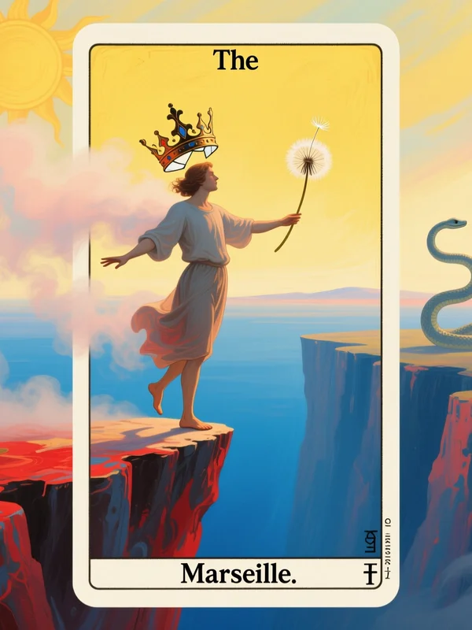
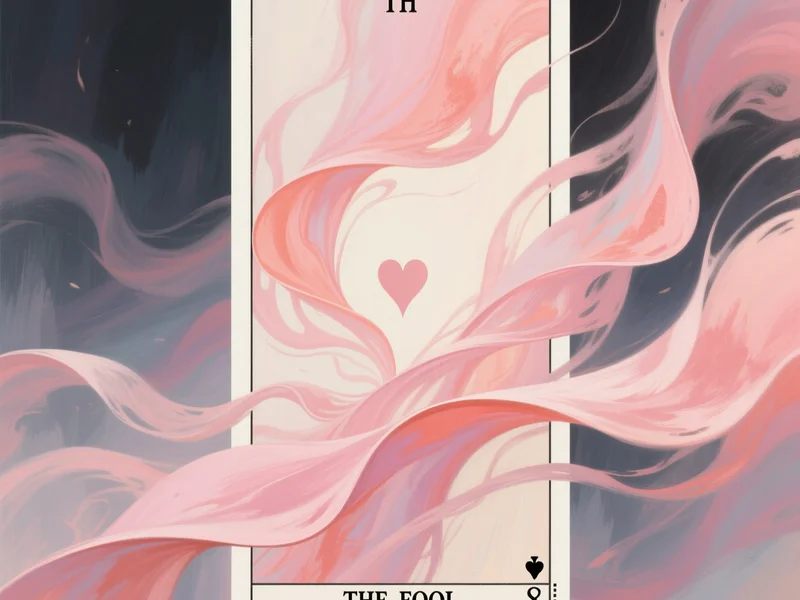

0 - Il Matto: L'ingenuità traumatizzata

Il Matto: l'inizio del viaggio
L'immagine archetipale
Il Matto nei Tarocchi classici è un giovane che cammina felicemente verso il precipizio, uno zaino in spalla, gli occhi puntati al cielo. Non vede il pericolo. La sua innocenza è radiantemente disarmata.
Ma nel tuo caso, nel profilo Ansioso Alto, sei il Matto che conosce il precipizio ma non riesce a smettere di correre verso di esso. Conosci il pericolo. Lo senti nel tuo corpo. Ma il corpo ha imparato che:
L'amore = ricerca disperata
La sicurezza = rincorrere
La vicinanza = sopravvivenza
L'Archetipo dell'Amante Ferito
L'Amante nei Tarocchi rappresenta la capacità di connettersi, di desiderare profondamente, di cercare l'unione. Ma nel tuo caso, questo archetipo è traumatizzato: il desiderio si è trasformato in disperazione.
Cosa significa archetipalmente:
L'Amante in te sa cosa significa amare profondamente
L'Amante ferito non sa quando fermarsi nella ricerca
Il Matto disadatto ti fa correre verso il precipizio della rincorsa
Il corpo archetipale
La tua energia archetipale è iper-attivata: il petto stretto, il cuore che batte freneticamente, la ricerca che non ha fine. Nel linguaggio dei Tarocchi, sei quello che "brucia dalla ricerca dell'altro".
L'Ombra del Matto: Il Tradimento di Sé
Jung parla di "Ombra" — la parte di noi che rifiutiamo, che rimane inconscia. L'ombra del Matto Ansioso Alto è:
L'auto-abbandono (rincorri l'altro abbandonando te stesso)
L'auto-tradimento (il tuo corpo ha imparato che il tuo valore dipende da chi ti ama)
L'aggressività repressa (che emerge come passività-aggressiva o comportamenti manipolativi)
Il controllo mascherato da "preoccupazione"
L'indipendenza e autonomia represse (viste come minacciose per le relazioni)
La consapevolezza junghiana significa integrare l'ombra: riconoscere che ami profondamente (non è difetto), ma che stai abbandonando te stesso (questo è il vero danno). Quando integri questa ombra, l'aggressività repressa diventa assertività sana, il controllo diventa comunicazione autentica, e l'indipendenza repressa diventa autonomia equilibrata.
Il profilo nel modello a gradienti
Nel modello a gradienti, Ansioso Alto significa:
Ansia di Attaccamento: ALTA (7-10/10)
Evitamento: BASSO (0-3/10)
Livello: ALTO — Cronico, terapia consigliata
Caratteristiche del livello ALTO
Ansia di attaccamento costante
Paura cronica dell'abbandono
Rassicurazione mai "abbastanza"
Ricerca ossessiva di segnali rassicuranti
Interpretazione negativa di tutto
Nel corpo (sensazioni fisiche)
Petto cronicamente stretto
Nodo permanente alla gola
Buco nello stomaco quasi costante
Tremore delle mani frequente
Insonnia / sonno agitato
Gastrointestinale disturbati
Pattern relazionale
Pattern relazionale: riconoscere il ciclo
Relazioni spesso tossiche (cicli di rassicurazione-abbandono)
Dipendenza dal partner per autostima
Gelosia intensa
Sesso utilizzato come test di amore
Spesso tradimenti (cercano rassicurazione altrove)
Comunicazione invadente / stalking emotivo
Processo Primario vs Secondario
Processo Primario: Ti identifichi come "amorevole e devoto", "disposto a tutto per amore", "emotivamente disponibile". La narrativa è "Voglio solo amore e sicurezza, sono disposto a tutto per ottenerlo".
Processo Secondario: Cosa viene negato include l'aggressività e il controllo (visti come "cattivi"), la paura profonda di essere fondamentalmente non amabile, la rabbia per il bisogno costante di rassicurazione, e la dipendenza che si nasconde dietro l'immagine di devozione. Il processo secondario è molto attivo e si manifesta attraverso comportamenti controllanti e bisognosi, anche se non li riconosci come tali.
Segnali del Processo Secondario
I segnali sono evidenti e frequenti: micro-espressioni di ansia quando il partner è distante, cambi di tono di voce (più acuto o tremante), tensione muscolare costante, respiro superficiale e veloce, gesti di "aggrappamento" (toccare continuamente, avvicinarsi eccessivamente), interruzioni nelle conversazioni per ottenere attenzione. I doppi segnali sono frequenti: dici "Sto bene" o "Ti amo" (verbale) mentre il corpo comunica ansia e bisogno disperato (non-verbale), o dici "Non voglio controllarti" mentre controlli la posizione del partner sui social media.
Feedback Loop e Processi Sistemici
Il pattern relazionale crea un feedback loop patologico di amplificazione (feedback positivo) dove il processo primario ("Voglio essere amato e sicuro") entra in conflitto con il processo secondario ("Non sono abbastanza degno"). L'ombra proiettata (paura di essere abbandonato perché fondamentalmente non amabile) alimenta il ciclo, creando doppi segnali che confondono il partner e mantengono il pattern di ricerca disperata.
Trigger
Partner non disponibile (anche legittimamente)
Qualsiasi segno di perdita di interesse
Silenzio del partner (interpretato come rifiuto)
Lavoro / distrazioni del partner
La consapevolezza archetipale
Il primo passo della Consapevolezza
Il Matto, nel percorso iniziatico junghiano, rappresenta il punto di partenza. Non è "sbagliato" essere il Matto. È il primo passo.
La consapevolezza inizia quando:
Noti che stai correndo (non che è male correre)
Riconosci che il precipizio è reale (non che sia una tua illusione)
Cominci a chiederti: "Verso dove sto correndo?" (il Matto pone domande al cielo)
Timeline archetipale della Consapevolezza
Mese 0: Il Matto corre senza vedersi
Mese 3: Il Matto inizia a notare il precipizio
Mese 6: Il Matto riconosce il suo desiderio disperato
Mese 9: Il Matto impara che il cielo non risponde (ma lui vive comunque)
Mese 12+: L'Amante Consapevole sceglie di amare senza perdizione
L'integrazione archetipale
Il Tarocchi mostra una progressione: il Matto all'inizio del mazzo, l'Amante al centro, il Saggio alla fine. La tua evoluzione è questo percorso.
Quando raggiungi Ansioso Basso, non cessi di essere l'Amante — diventi l'Amante che conosce il suo desiderio invece di essere posseduto da esso.